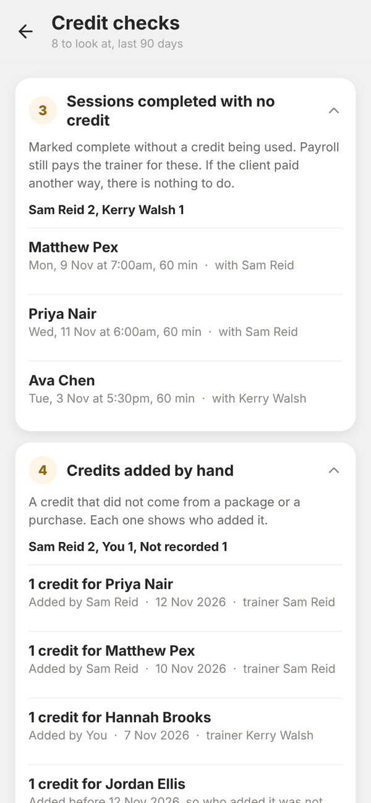
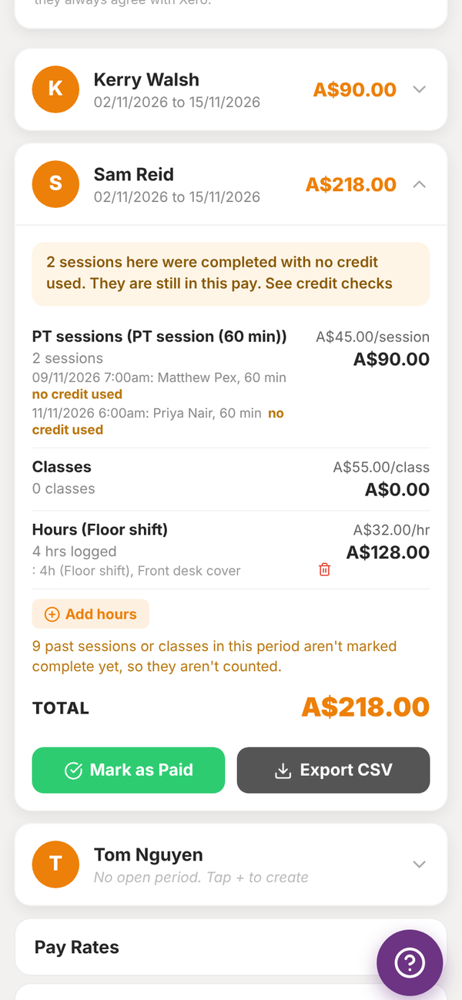

Totality for gym owners
Credit checks
See sessions completed with no credit used, PT credits added by hand and who added them, and credits put back after a session.
Owner
Credit checks shows three things about PT credits over the last 90 days. Nothing is changed from this screen. It only shows what happened, so you can ask about it.
Open the Staff tab, then Credit checks, or use Find a screen on your dashboard. Only the owner can see it.


Sessions completed with no credit#
Sessions marked complete without a credit being used. Payroll still pays the trainer for these. If the client paid another way, there is nothing to do.
Credits added by hand#
A credit that did not come from a package or a purchase. Each one shows who added it: "You" when it was you, or the trainer's name. Credits added before 12 November 2026 show as not recorded, because who added them was not kept before then.
Credits put back after the session#
A used credit went back to available, but its session still shows as completed or a no-show. That credit can be used again.
In Payroll#
A trainer's pay card shows a note when sessions in that pay were completed with no credit used, with a link to Credit checks. Each of those sessions is tagged "no credit used". See Payroll.
Can my trainers see this screen?
No. Trainers are told, when they add a credit by hand, that the owner can see it and who added it.